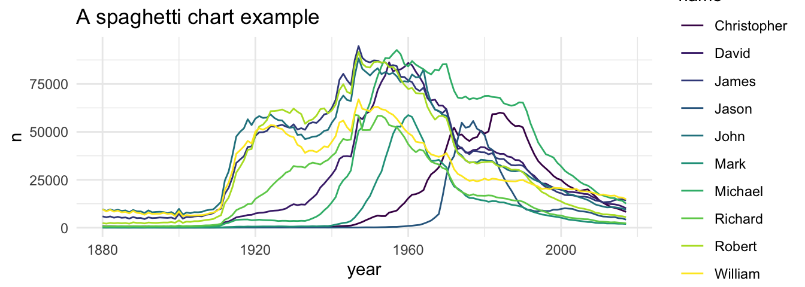
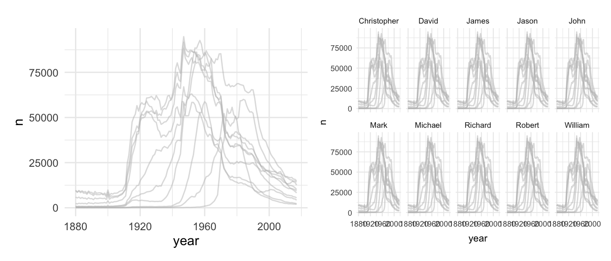
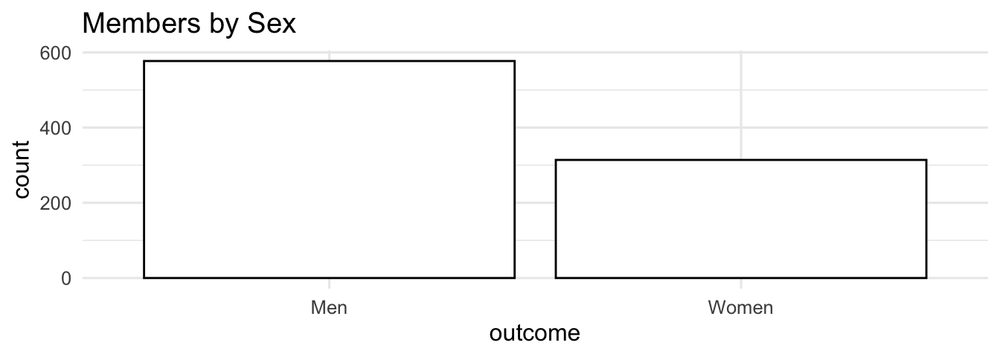

# Tutorial 7 needs the following packages in addition:
library(babynames)
library(forcats)
library(patchwork)
library(dplyr)
library(viridis)
library(ggthemes)
library(ggplot2)
library(showtext)6 Visualize data
Welcome to tutorial of the Practice R book (Treischl 2023). Practice R is a text book for the social sciences which provides several tutorials supporting students to learn R. Feel free to inspect the tutorials even if you are not familiar with the book, but keep in mind these tutorials are supposed to complement the Practice R book. 
Chapter 7 introduced ggplot2 which gives us plenty of opportunities to visualize data (Wickham, Chang, et al. 2022). We got in touch with the ggplot() function, we applied themes, add color, changed fonts, and we learned many more details about the package. Against this background there are at least two options for a ggplot2 tutorial: I could ask you to apply steps to create a similar plot. It is my personal believe that it needs a lot of time and experience to get fluent in ggplot2, which is why we do not pursue such a heroic aim. Some people document the long process to generate a graph as the artwork by Cédric Scherer underlines. It is an animation that shows the steps to create a graph. Thus, it needs a lot of time and effort to develop a customized plot.

Besides the technical skills, the guiding principles of visualization will help you to create insightful visualizations. Cairo (2016) summarizes five qualities of a graph as:”
- It is truthful, as it’s based thorough and honest research.
- It’s functional, as it constitutes an accurate depiction of the data, and it’s build in a way that lets do people meaningful operations based on it (seeing change in time).
- It’s beautiful, in the sense of being attractive, intriguing, and even aesthetically pleasing for its intended audience – scientists, in the first place, but the general public, too.
- It is insightful, as it reveals evidence that we would have a hard time seeing otherwise.
- It is enlightening because if we grasp and accept the evidence it depicts, it will change our minds for the better.” (Cairo 2016: 45).
These principles give us a guidance, but some of them seem complex and depend on the creator and viewer. For example, we probably all agree on the first quality of being truthful, but who says that a graph is (not) beautiful? And what does that even mean? Or a graph might be less insightful if the topic is not novel for the audience. We may argue for a long time whether a principle is fulfilled, but hopefully we agree in the case of obvious flaws that could be improved.
For this reason, this tutorial is dedicated providing first insights about well-known visualization pitfalls and we increase our ggplot2 skills by learning how to fix them. First, we learn why it is important to order data. Then, we inspect why a lot of people perceive box plots with suspicion. Next, we get in touch with a spaghetti plot. Finally, we will see what it means to cut the clutter.
6.1 Order the data
Suppose you created a bar graph to examine cars and their manufacturer (mpg$manufacturer). The data is not important, but we need to learn how to order the levels of a categorical variable. As the next console illustrates, the displayed information is difficult to perceive because the bars are all mixed up. Adjust the levels of a factor variable manually or use the fct_infreq() function from the forcats package to order the data by frequency (Wickham 2022).
#Simple bar graph
p1 <- ggplot(data=mpg, aes(x=manufacturer)) +
geom_bar()
#Order the data
p2 <- ggplot(data=mpg, aes(x=fct_infreq(manufacturer))) +
geom_bar()
p1 + p2It is our job is to make the graph and its insights accessible. The example underlines that we need to structure and present the data in a way that leverages the message. The last graph also illustrates that there are many group levels making it difficult to depict them all in one graph even if we ordered the data. Moreover, look at the labels, they are not vertically aligned which makes it hard to read. Remember, the forcats package offers many functions to manipulate factor variables. For example, display only the five largest groups with the fct_lump function and use the coord_flip() function to turn around the axes to align the labels vertically.
# Lump levels with fct_lump
mpg$manufacturer_max <- fct_lump(mpg$manufacturer, n = 5)
# Left: Plot less levels
p1 <- ggplot(data = mpg, aes(x = fct_infreq(manufacturer_max))) +
geom_bar()
# Right: Flip axes
p2 <- ggplot(data = mpg, aes(x = fct_infreq(manufacturer_max))) +
geom_bar() +
coord_flip()
p1 + p2To order the data is important, regardless of the graph created. For example, suppose you examine car consumption (mpg$hwy) for different classes of cars (mpg$class) with a box plot. Look at the unsorted plot, can you tell me which level has the highest mean? It is complicated to compare groups without a useful order. Try to apply the fct_reorder() function, because it lets us reorder the class variable by its consumption (hwy).
# A basic plot
p1 <- ggplot(mpg, aes(hwy, class)) +
geom_boxplot()
# Use fct_reorder to sort class by their consumption
p2 <- ggplot(mpg, aes(hwy, fct_reorder(class, hwy))) +
geom_boxplot()
p1 + p2We therefore are supposed to order the data and communicate in a coherent way, otherwise the audience may get confused. There are however additional pitfalls when it comes to box plots.
6.2 Boxplot pitfalls
I generated fake data with a group and an outcome variable to illustrate the main concerns against box plots.
# Some fake data
glimpse(data)#> Rows: 615
#> Columns: 2
#> $ group <chr> "A", "A", "A", "A", "A", "A", "A", "A", "A", "A", "A", "A", "A…
#> $ outcome <dbl> 10.10382, 13.16970, 13.30005, 14.04064, 12.60207, 13.93720, 11…Say you estimated a box plot to examine the differences between the groups. At first glance there seems to be a large differences between groups as the first box plot reveals, but are we comparing on fair grounds? See what happens if you add a geom_jitter(). It displays observations with points, but compared to a geom_point it adds a small amount of random variation to reduce over plotting.
#A Basic geom_boxplot
p1 <- ggplot(data, aes(x = group, y = outcome)) +
geom_boxplot()
#Add a geom_jitter(color, size, alpha)
p2 <- ggplot(data, aes(x = group, y = outcome)) +
geom_boxplot() +
geom_jitter(color = "#d62828",
size = 0.5,
alpha = 0.6)
p1 + p2
We are comparing three different groups, but the amount of observations are unevenly distributed between the groups and we hardly observe any from group C. This becomes visible when using geom_jitter() to add observations, compared to geom_boxplot() which does not display the data. A box plot disguises such problems which is obviously a serious concern.
The geom_jitter already improved the graph, what else can we do to fulfill the guiding principles of visualization. For example, include the sample size in the graph to make our reader conscious about the problem. The next steps are a bit trickier to apply: Estimate the sample size per group and assign the results. Use the dplyr::n() function to count observations, but you will need to group the data first (Wickham, François, et al. 2022).
# Estimate sample_size (n) per group
sample_size <- data |>
dplyr::group_by(group) |>
dplyr::summarize(num = dplyr::n())
sample_size#> # A tibble: 3 × 2
#> group num
#> <chr> <int>
#> 1 A 100
#> 2 B 500
#> 3 C 15To include the sample size in the graph, we need to combine the group label and the sample size. We can paste text strings together with the paste (and paste0) function, as the next console illustrates. It returns text strings which we can include in the graph.
# Concatenate Strings with paste (and paste0)
paste(sample_size$group, "has N =", sample_size$num, " observations.")#> [1] "A has N = 100 observations." "B has N = 500 observations."
#> [3] "C has N = 15 observations."First, combine both data sets with a left_join(). Second, create a new variable to add the text label. Use the paste function to paste the text label, but also add a new line (\n) to separate the group name and the text to display the sample size (num).
# Join data and mutate with text labels for group_N
data <- data |>
dplyr::left_join(sample_size) |>
dplyr::mutate(group_N = paste0(group, "\n", "N=", num))
head(data)#> group outcome num group_N
#> 1 A 10.10382 100 A\nN=100
#> 2 A 13.16970 100 A\nN=100
#> 3 A 13.30005 100 A\nN=100
#> 4 A 14.04064 100 A\nN=100
#> 5 A 12.60207 100 A\nN=100
#> 6 A 13.93720 100 A\nN=100Now we can use the new variable (group_N) as x and include the sample size. It goes without saying that there are more ways to improve a box plot (and to include text). For example, we can use a geom_violin() to examine the distribution, as the second plot on the right side shows.
#Use the new variable group_N as x
p1 <- ggplot(data, aes(x = group_N, y = outcome)) +
geom_boxplot()+
geom_jitter(color = "#d62828",
size = 0.5,
alpha = 0.6)
#A violin plot and stat_summary
p2 <- ggplot(data, aes(x = group, y = outcome)) +
geom_violin(width=0.6, alpha=0.8)+
stat_summary(fun = "median", color = "red",
size = 1.5, geom = "point")+
stat_summary(fun.data = return_stats,
geom = "text",
size = 2, fontface = "bold",
hjust = 0.5, vjust = 0.9)
p1 + p2
As the right plot shows, I used the stat_summary() function twice to include further statistics. First, I used the function to display the median of each group. Second, I used a function (return_stats) that returns the statistics and finally the stat_summary() function which includes them as text in the plot. The latter approach is more flexible but also more complicated than the first approach. The next console shows how the function works and we will learn more about the geom_text at the end of this tutorial.
Code
# The return_stats function
return_stats <- function(y) {
return(data.frame(
value = max(y) * 1.2,
label = paste(
"N =", length(y), "\n",
"Mean =", round(mean(y), 2), "\n",
"Median =", round(median(y), 2), "\n"
)
))
}
return_stats(data$outcome)#> value label
#> 1 28.02887 N = 615 \n Mean = 12.99 \n Median = 12.86 \nRegardless of the approach, keep in mind that a box plot does not show the data nor does it display the distribution. Compared to that, the geom_jitter() displays the data and the violin plot reveals the underlying distribution.
To calculate the sample size or other statistics seems a bit awkward if you are not used to customized plots. Fortunately, there are further ggplot2 extension package that help us with this task. For example, the see package has a geom_violindot() function, which combines a violin with a dot plot. The latter makes it convenient to inspect the sample size and the distribution (Lüdecke et al. 2022). Add the geom, fill the dots black (via fill_dots); and find a reasonable size for the dots via size_dots option.
# The see package adds a geom_violindot
library(see)
ggplot(data, aes(x = group, y = outcome, fill = group)) +
geom_violindot(fill_dots = "black", size_dots = 5) +
scale_fill_material_d(palette = "contrast")
Or consider the ggstatsplot package: As the result from the ggbetweenstats() function shows, the package automatically adds statistical details to the graph. In our case, it combines box and violin plots to compare the outcome between the subjects (Patil 2023).
# The ggstatsplot package
library(ggstatsplot)
ggbetweenstats(data, group, outcome) +
theme_minimal(base_size = 10)
6.3 The spaghetti plot
Another classic visualization pitfall is the spaghetti plot. Essentially it is a line graph with too many lines and colors which is why we cannot see what is going on. We can create a spaghetti plot with the babynames package and the corresponding data (Wickham 2021). The package contains names of newborn babies in the US and includes proportion for a long period (1880-2017). Suppose we examine how the most popular male names have been developed over time. I have already prepared the data to identify the most popular male names (Top 10: name_pop).
# The Top 10 male names
name_pop#> [1] "James" "Michael" "Robert" "John" "David"
#> [6] "William" "Christopher" "Richard" "Mark" "Jason"To visualize how often these names appear, we need to apply a filter to get only male babynames and to filter the data for the Top 10 names.
# Get male baby names for the Top 10 names
babynames_df <- babynames %>%
filter(sex == "M" & name %in% name_pop)Next, visualize the data with a line plot (geom_line). Use year as x, n as y, and name as group and color aesthetic.
# Plot
babynames_df %>%
ggplot(aes(x = year, y = n, group = name, color = name)) +
geom_line() +
scale_color_viridis(discrete = TRUE) +
ggtitle("A spaghetti chart example")
What a confusing graph: single lines look like spaghettis and we can’t see how often each name was used over the time. How can we improve the spaghetti plot? You are already familiar with a simple, but powerful solution. Apply a facet_wrap() and split the graph in subplots.
# Split with facet_wrap
ggplot(babynames_df, aes(x = year, y = n, group = name)) +
geom_line() +
facet_wrap(name ~ ., nrow = 2)There is still room for further improvement: We could - for example - to draw all lines in gray and highlight for each facet the corresponding line in a different color. First, we need to create a copy of the name variable (facet_names), which we will use to facet the graph.
# Copy the names column
babynames_df$facet_names <- babynames_df$nameNext, I prepared the geom_line() to create a spaghetti plot one more time with gray lines only, as the first plot on the left side shows. However, see what happens if you add the facet_wrap() function and the facet_names variable to split the graph.
p1 <- ggplot(babynames_df, aes(x=year, y=n)) +
geom_line(data = babynames_df %>% select(-facet_names),
aes(group=name),
color="grey",
linewidth=0.5,
alpha=0.5)
p2 <- ggplot(babynames_df, aes(x=year, y=n)) +
geom_line(data = babynames_df %>% select(-facet_names),
aes(group=name),
color="grey",
linewidth=0.5,
alpha=0.5)+
theme_minimal(base_size = 8)+
facet_wrap(facet_names ~ ., nrow = 2)
p1 + p2
As the second plot show, the new variable gives us the chance to create subplot for each name, but all lines are still included if we use the copy. Next, use a second geom_line() for the overlay. Insert the name as a color aesthetic, which will make a comparison easier. Moreover, give the overlaying line a distinct color and adjust its size with linewidth.
#add another geom_line as overlay
final_plot <- ggplot(babynames_df, aes(x=year, y=n)) +
geom_line(data = babynames_df %>% select(-facet_names),
aes(group=name),
color="grey",
linewidth=0.5,
alpha=0.5) +
theme_minimal(base_size = 10)+
facet_wrap(facet_names ~ ., nrow = 2)+
geom_line(aes(color=name), color="darkred", linewidth=0.75)
final_plotWe focused on ggplot2, because we need a print version to visualize data in applied empirical research. However, we could also make the last plot interactive to untangle the spaghetti plot. For example, Highcharts is a JavaScript software library to create interactive charts and I used the highcharter package to create a responsive HTML version of the spaghetti plot (Kunst 2022). The next console shows the code for an improved version of the graph with the highcharter package.
Learning a new package and creating interactive graphs might be too far reaching in the beginning, just keep in mind that such possibilities exits. And in this case it is not even necessary to learn a new package to make the graph interactive, because the plotly package can create an interactive version for many standard graphs that are made with ggplot2 (Sievert et al. 2022). Plotly is a JavaScript library to visualize data and can convert a ggplot2 object into a plotly chart.

Consider reading Interactive web-based data visualization with R, plotly, and shiny by Carson Sievert if you want to improve your interactive visualization skills
# Interactive web-based data visualization with R, plotly, and shiny
PracticeR::show_link("plotly")Instead of learning more about interactive visualization techniques, the last pitfall is not a flaw, it is a principle and an important advice.
6.4 Clutter
Edward Tufte underlines: “Clutter and confusion are failures of design, not attributes of information”. He highlightes that we are supposed to cut the clutter and get rid of everything that is not necessary to visualize the data.
Consider the next two graphs. I made two bar graphs with a toy data frame and a binary outcome to keep it as simple as possible. I took my quite some time to create a graph that outlines the idea. As the plot on the left side shows, I created a theme that is supposed to look like the old Excel theme with a lot of clutter: The background is gray, I colored the bars even though the color and the legend do not transport any information, and I picked thick, black grid lines for a finishing touch. To compare this ugly beast, the right side shows the ggplot2 default version. Unfold the code if you want to create a ugly, cluttered graph on your own.
The reinvention of the old Excel theme seems a bit drastic, but even the default ggplot2 theme has some clutter that we could get rid of. This might not be necessary, but it highlights that there is always room to improve a graph, especially when it comes to clutter. For example, we could use a different theme to get rid of the gray background, there is no need to color each bar since they do not represent information, and we could integrate a label for each bar to communicate clearly.
So, fill the bars white and make the border of the bars black. In addition, use a theme without background colors and provide a descriptive title.
# De-color de bars
ggplot(df_clutter, aes(x = outcome, y = count)) +
geom_col(color = "black", fill = "white") +
theme_minimal(base_size = 12) +
labs(title = "Members by Sex")
Next, the geom_text() helps us to integrate text labels. Essentially, the function displays texts as a geometrical object which is why the main logic is not different compared to other geoms. I added a simple data frame (df_text) to illustrate how the geom works. It contains coordinates for x and y and an example text to visualize.
df_text <- tibble::tribble(
~x, ~y, ~text, ~group,
-1, -1, "bottom left", "B",
-1, 1, "top right", "A",
1, 1, "top left", "A",
1, -1, "bottom right", "B",
0, 0, "center", "C"
)As the next console highlights, the function depicts the text in accordance with the x and y coordinate, as the plot on the right side shows. The geom understands supplementary aesthetics and options (e.g., size, fontface) to display text. To give you an idea how it works, add the color aesthetics for each group and adjust the alignment of the text with the vjust (vertical adjustment) and the hjust (horizontal adjustment) option. If you set them to inward, the text will be aligned towards the center, but there are more alignment options available (e.g., left, right, center) should you prefer those.
# geom_text example
p1 <- ggplot(df_text, aes(x, y)) +
geom_text(aes(label = text),
size = 3
)
# insert color aesthetic and adjust options (e.g., size, fontface)
p2 <- ggplot(df_text, aes(x, y, color = group)) +
geom_text(aes(label = text),
vjust = "inward",
hjust = "inward",
size = 3,
fontface = "bold"
) +
scale_color_brewer(palette = "Set1")
p1 + p2Since the data does not contain text to improve the bar graph, we may use the paste() function to create a label. It contains the group level, a new line (\n), and the percentages.
# Paste a label
paste0(df_clutter$outcome, "\n", df_clutter$percent, "%")#> [1] "Men\n64.8%" "Women\n35.2%"Include the latter as a label and adjust the position via the y parameter Use the count and adjust it by increasing (decreasing) it manually. In addition, pick a text color and a reasonable text size.
#Include text labels inside the bars
ggplot(df_clutter, aes(x=outcome, y=count)) +
geom_col(color = "black", fill = "white")+
geom_text(aes(label = paste0(outcome, "\n", percent, "%"),
y = count - 100),
color="black",
size = 3.5)+
theme_minimal(base_size = 12)+
labs(title= "Members by Sex") 6.5 Summary
I highlighted several books to improve your ggplot2 and data visualizations skills, but at the end of the day your skills will improve faster, if you start to visualize data on your own and accept that trial and error are not necessarily a wrong approach. To this end, the ggplot2 cheat sheet (from the package website) will support you as well.
In addition, keep the following functions and packages from Chapter 7 in mind:
Create a new ggplot (
ggplot), aesthetic mappings (aes), and add a geom_* (e.g.,geom_bar, geom_point, geom_smooth)Add a layer with
+, start each new function on a new line, don’t forget to delete the plus sign if you delete the last line of codeThere are several predefined theme functions (e.g.,
theme_bw,theme_light).Modify axis, legend, and plot labels (e.g., with
labs)Lay out panels in a grid (e.g.,
facet_grid)Discard (or adjust) the legend (e.g.,
theme(legend.position = "none"))Adjust the coordinate system (e.g.,
coord_cartesian)Further packages:
- Themes:
ggthemes(Arnold 2021) - Font types:
showtext(Qiu 2022) - Color: The
RColorBrewer(Neuwirth 2022) and theviridispackage (Garnier 2021) - Many color palettes:
paletteer(Hvitfeldt 2021) - Combine graphs:
patchwork(Pedersen 2022b) - Zoom in:
ggforce(Pedersen 2022a)
- Themes: